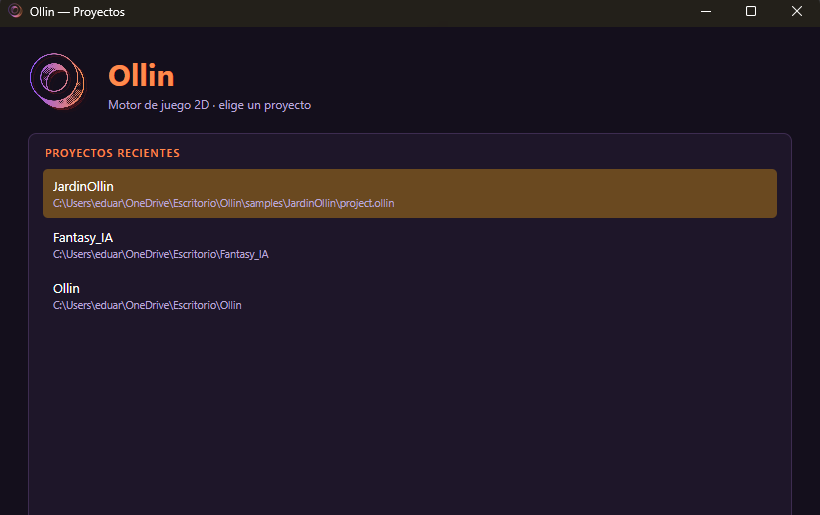
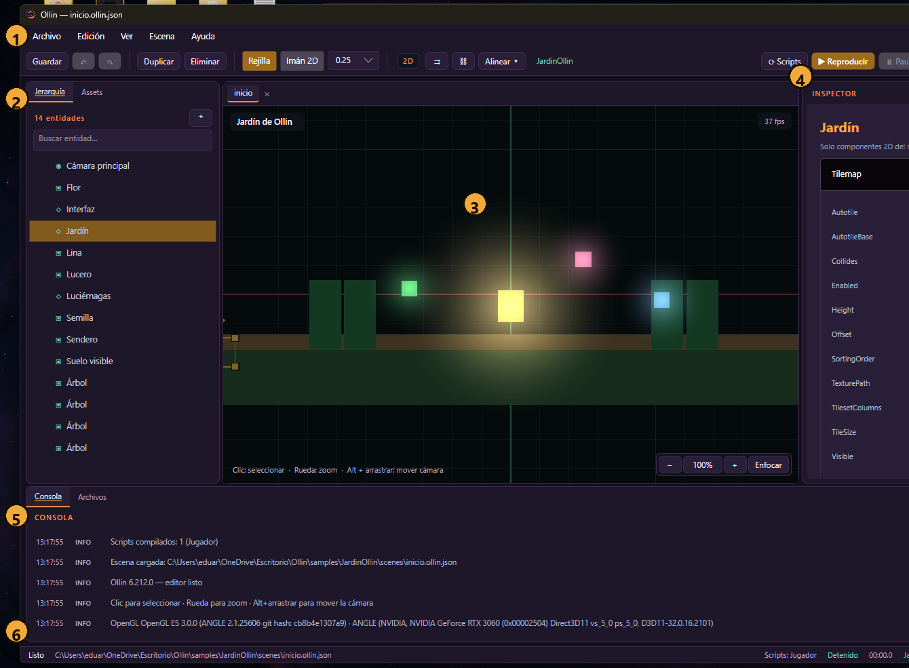
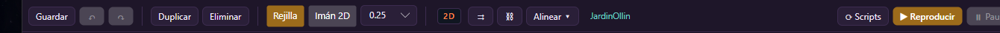
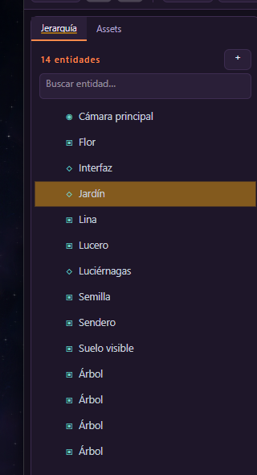
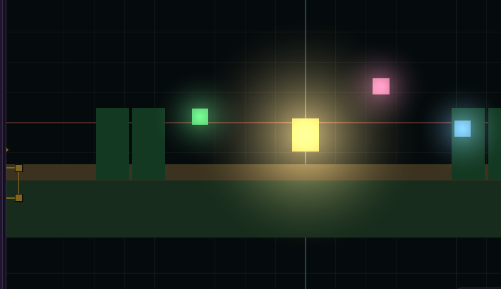
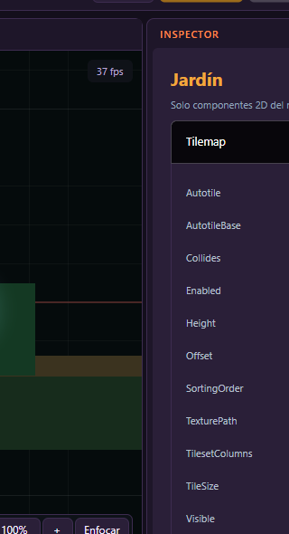
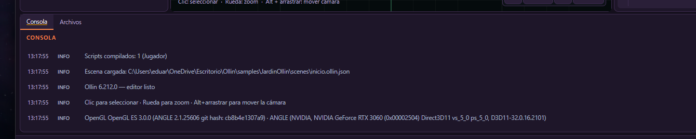

WindowsLinux (experimental)Beta
Ollin es un motor 2D: la escena se compone de entidades, cada entidad tiene una transformación y una lista de componentes. La lógica se escribe en C# o se genera desde el grafo visual.
| Concepto | Qué es | Ejemplo |
|---|---|---|
| Entidad | Objeto de la escena con nombre, transformación y componentes. | Lina, Jardín, Cámara principal |
| Componente | Dato o comportamiento añadido a una entidad. | SpriteRenderer, Camera2D, Tilemap |
| Escena | Colección de entidades guardada en un archivo .ollin.json. | scenes/inicio.ollin.json |
| Proyecto | Carpeta con escenas, scripts, assets y project.ollin. | samples/JardinOllin |
| Script | Clase C# que hereda de OllinScript y se ejecuta en una entidad. | Jugador.cs |
Fantasy_IA, mostrarán errores de carga. Usa proyectos nuevos o el ejemplo incluido.Al iniciar el editor se abre la pantalla de proyectos. También puedes abrir un proyecto directamente:
dotnet run --project src/Ollin.Editor/Ollin.Editor.csproj -- --project samples/JardinOllinEl ejemplo Jardín de Ollin incluye cámara, tilemap, luces, partículas, UI y un script de movimiento/recogida. Es la mejor forma de probar la beta sin crear todo desde cero.

| Botón / zona | Para qué sirve |
|---|---|
| Proyectos recientes | Lista de proyectos abiertos antes. Selecciona uno y pulsa Abrir proyecto. |
| Crear proyecto… | Crea una carpeta de proyecto nueva con escena y script inicial. |
| Abrir carpeta… | Abre un proyecto que ya existe en disco. |
| Eliminar proyecto | Quita el proyecto de la lista reciente. No borra la carpeta del disco. |
| Abrir proyecto | Abre el proyecto seleccionado en el editor. |
| Salir | Cierra Ollin. |

| Menú | Opciones y para qué sirven |
|---|---|
| Archivo | Nuevo proyecto, Abrir proyecto, Cerrar proyecto; Modo de componentes (Vacío, Por género, Completo); Nueva escena, Abrir escena, Guardar escena, Guardar como; Exportar juego; Salir. |
| Edición | Deshacer (Ctrl+Z), Rehacer (Ctrl+Y), Copiar (Ctrl+C), Pegar (Ctrl+V), Guardar como prefab, Duplicar, Eliminar, Abrir script de la selección, Atajos del teclado, Mapa de entrada. |
| Ver | Centrar cámara (Home), Enfocar selección (F), Mostrar cuadrícula, Ventana de juego (Ctrl+G), Tema (Oscuro, Claro, Ollin). |
| Escena | Reproducir / detener (F5), Pausar / reanudar (F6), Detener y restaurar, Guardar partida, Cargar partida. |
| Ayuda | Guía rápida, atajos y acerca de Ollin. |

| Control | Función |
|---|---|
| Guardar | Guarda la escena actual. Si hay cambios sin guardar, el título lo indica. |
| Deshacer / Rehacer | Revierte o repite la última acción de edición. |
| Duplicar | Copia la entidad seleccionada con sus componentes. |
| Eliminar | Borra la entidad seleccionada. |
| Rejilla | Muestra u oculta la cuadrícula del visor. |
| Imán 2D | Activa el ajuste a la cuadrícula al mover entidades. |
| Selector de zoom | Cambia el zoom del visor (25 %, 50 %, 100 %...). |
| Distintivo 2D | Indica que el editor está en modo 2D. 3D y 2.5D están ocultos. |
| ⇉ | Duplica una serie de entidades seleccionadas. |
| ⛓ | Abre el grafo de nodos para generar lógica C# sin escribir código. |
| Alinear ▾ | Alinea varias entidades: izquierda, centro, derecha, arriba, medio, abajo. |
| Nombre del proyecto | Muestra el proyecto abierto. |
| Scripts | Abre el editor de scripts del proyecto. |
| Reproducir | Ejecuta la escena en el editor (F5). |
| Pausa | Pausa o reanuda la reproducción (F6). |
| Detener | Detiene y restaura el estado previo a la reproducción. |
| Exportar | genera un ejecutable del juego con la escena y assets. |

| Elemento | Uso |
|---|---|
| Jerarquía | Lista de entidades de la escena. El punto de color indica el tipo de componente principal. |
| Assets | Archivos del proyecto: escenas, scripts, sprites, audio, prefabs. |
| Nº de entidades | Cuenta las entidades de la escena actual. |
| + | Crea una entidad nueva. Elige nombre y padre si aplica. |
| Buscar entidad… | Filtra por nombre en tiempo real. |
| Clic en una entidad | La selecciona y abre su inspector a la derecha. |

| Acción | Cómo |
|---|---|
| Seleccionar | Clic sobre una entidad o sobre su nombre en la jerarquía. |
| Zoom | Rueda del ratón. |
| Mover cámara | Alt + arrastrar, o botón central si está disponible. |
| Mover entidad | Arrastra la entidad seleccionada. Con Imán 2D se ajusta a la cuadrícula. |
| Enfocar | Botón Enfocar o tecla F para centrar la selección. |
| Zoom rápido | Botones − / + y porcentaje; 100 % restaura la escala. |

El inspector se abre automáticamente al seleccionar una entidad. No hay que abrir ninguna ventana.
| Parte | Uso |
|---|---|
| Nombre de entidad | Identifica lo que estás editando. |
| Componentes | Cada componente aparece en un desplegable con sus campos editables. |
| Campos | Números, textos, vectores, colores, booleanos y enums. Los cambios se aplican al instante y marcan la escena como modificada. |
| Quitar componente | Elimina el componente de la entidad. |
| Añadir componente | Desplegable con los componentes 2D disponibles del núcleo. |

| Elemento | Uso |
|---|---|
| Consola | Mensajes INFO, WARN y ERROR con hora. Los errores de script aparecen aquí. |
| Archivos | Árbol de archivos del proyecto. |
| Limpiar | Vacía la consola. |
| Scripts | Número de scripts compilados y su estado. |
| Estado | Detenido, reproduciendo o pausado. |
| Tiempo | Tiempo de reproducción. |
| Selección | Entidad seleccionada actualmente. |
| Zoom / FPS / draw calls | Zoom del visor, cuadros por segundo y llamadas de dibujo. |
project.ollin, scenes/inicio.ollin.json y scripts/Juego.cs.Los scripts son clases C# que heredan de OllinScript. Se guardan en scripts/ y se asocian a una entidad con ScriptComponent.
using System.Numerics;
using Ollin.Core.Input;
using Ollin.Scripting;
public sealed class Jugador : OllinScript
{
public override void OnStart()
{
Hud.SetLabel("puntos", "0");
}
public override void OnUpdate(float deltaTime)
{
var dir = Vector2.Zero;
if (Input.GetKey(KeyCode.A)) dir.X -= 1f;
if (Input.GetKey(KeyCode.D)) dir.X += 1f;
if (Input.GetKey(KeyCode.W)) dir.Y += 1f;
if (Input.GetKey(KeyCode.S)) dir.Y -= 1f;
if (dir.LengthSquared() > 0f)
Position += Vector2.Normalize(dir) * 4f * deltaTime;
}
}scripts/Jugador.cs y la clase Jugador.Al guardar el script, el editor lo compila. Los errores salen en la consola con archivo y línea. Si compila, puedes volver a reproducir sin reiniciar.
ScriptComponent.ClassName debe coincidir con la clase pública del archivo.| Método | Cuándo se ejecuta | Uso típico |
|---|---|---|
OnStart() | Una vez al iniciar la reproducción. | Inicializar variables, HUD, buscar entidades. |
OnUpdate(float dt) | Cada cuadro mientras se reproduce. | Mover, leer input, temporizadores. |
OnDestroy() | Al detener la reproducción o destruir la entidad. | Liberar recursos, desconectar señales. |
OnReload() | Tras recarga en caliente. | Reenganchar referencias externas. |
OnCollisionEnter(Entity) | Al chocar con un cuerpo sólido. | Daño, rebote, abrir puerta. |
OnTriggerEnter(Entity) | Al entrar en un área de disparo. | Recoger objeto, activar zona. |
OnTriggerExit(Entity) | Al salir del área. | Desactivar zona. |
OnInteract(Entity) | Al pulsar interactuar cerca. | Hablar, abrir cofre. |
OllinScript Miembros disponibles dentro de cualquier script. Los tipos de componentes se obtienen con Get<T>().
| Función / propiedad | Para qué sirve |
|---|---|
Entity | Entidad del script. |
Scene | Escena actual. |
Position | Posición local; se puede leer y asignar. |
WorldPosition | Posición en mundo incluyendo jerarquía. |
Active | Activa o desactiva la entidad. |
Children | Hijos directos. |
Get<T>() | Obtiene un componente o null. |
Require<T>() | Obtiene un componente o lanza error claro. |
Add<T>() | Añade un componente nuevo. |
Remove<T>() | Quita un componente. |
Find(nombre) | Busca una entidad por nombre. |
FindAll(texto) | Busca entidades cuyo nombre contiene el texto. |
Create(nombre, posición) | Crea una entidad en la escena. |
Destroy(entidad) | Elimina una entidad. |
SetParent(entidad) | Cambia el padre. |
Instantiate(rutaPrefab, posición) | Instancia un prefab JSON. |
Teleport(posiciónMundo) | Teletransporta en mundo. |
LookAt(puntoMundo) | Orienta la entidad hacia un punto. |
DistanceTo(entidad) | Distancia en mundo a otra entidad. |
| Función | Para qué sirve |
|---|---|
Input.GetAction(nombre) | ¿Está activa una acción del mapa de entrada? |
Input.GetActionDown(nombre) | ¿Se acaba de pulsar? |
Input.GetActionUp(nombre) | ¿Se acaba de soltar? |
Input.GetKey(KeyCode) | Tecla mantenida. |
Input.GetKeyDown(KeyCode) | Tecla pulsada este cuadro. |
Input.GetKeyUp(KeyCode) | Tecla soltada este cuadro. |
Input.GetMouseButton(n) | Botón del ratón: 0 izquierdo, 1 derecho, 2 central. |
Input.GetMouseButtonDown(n) | Botón pulsado este cuadro. |
Input.GetMouseButtonUp(n) | Botón soltado este cuadro. |
salto con la tecla Espacio, luego Input.GetActionDown("salto").| Función | Para qué sirve |
|---|---|
Audio.Play(clip, volumen, loop) | Reproduce un efecto. |
Audio.Music(clip, volumen, loop) | Música de fondo; corta la anterior. |
Audio.StopAll() | Detiene todo el audio. |
PlaySound(clip, volumen, loop) | Atajo de efecto desde el script. |
Hud.SetBar(nombre, valor, máximo, color) | Barra de progreso/vida. |
Hud.SetLabel(nombre, texto) | Etiqueta de texto. |
Hud.Message(texto, segundos) | Mensaje temporal. |
Hud.GameOver(texto) | Pantalla de fin de partida. |
Hud.Clear() | Vacía el HUD. |
ShowMessage(texto, segundos) | Atajo de mensaje. |
| Función | Para qué sirve |
|---|---|
Canvas | Canvas de UI de la entidad. |
SetUiText(id, texto) | Cambia el texto de un elemento por id. |
SetUiVisible(id, visible) | Muestra u oculta un elemento. |
PlayAnimation(clip, fade) | Reproduce un clip de AnimationPlayer2D. |
PlayState(estado) | Cambia el estado de AnimationStateMachine. |
Agent | NavigationAgent2D de la entidad. |
MoveTo(destino, velocidad) | Navega a un punto del mundo. |
StopMoving() | Detiene la navegación. |
IsMoving | ¿Queda camino por recorrer? |
ShakeCamera(intensidad, duración) | Sacude la cámara principal. |
| Función | Para qué sirve |
|---|---|
Connect(señal, handler) | Escucha una señal global. |
Emit(señal, datos) | Emite una señal global. |
ScriptSignals.Disconnect | Desconecta un handler. |
TweenPosition(destino, duración, callback) | Interpola la posición. |
StartCoroutine(rutina) | Lanza una corrutina. |
yield return new WaitForSeconds(s) | Espera dentro de una corrutina. |
StopAllCoroutines() | Cancela las corrutinas del script. |
Connect("puerta.abierta", _ => Hud.Message("La puerta se abrió"));
Emit("puerta.abierta", this);Las acciones de UI con el formato signal:nombre emiten una señal global; los scripts pueden escucharla con Connect.
| Función | Para qué sirve |
|---|---|
Physics2D.Raycast(escena, origen, dirección, distancia) | Lanza un rayo y devuelve el primer impacto. |
Physics2D.BoxCast(escena, centro, tamaño, dirección, distancia) | Barrido de caja contra colisionadores. |
Save.Set/Get(clave, valor) | Guarda o lee un texto en la partida. |
Save.SetNumber/GetNumber | Guarda o lee un número. |
Save.SetFlag/GetFlag | Guarda o lee un booleano. |
Network.StartHost(puerto) | Inicia un host básico. |
Network.Connect(host, puerto) | Conecta a un host. |
Network.Stop() | Detiene la red. |
El proyecto de ejemplo está en samples/JardinOllin. Abre project.ollin o usa el comando de la sección 2.
| Entidad | Componentes | Para qué |
|---|---|---|
| Cámara principal | Camera2D | Sigue a player, límites y ambiente. |
| Jardín | Tilemap | Colisión del suelo. |
| Suelo visible / Sendero | SpriteRenderer | Color visual del suelo y camino. |
| Árboles | SpriteRenderer + BoxCollider | Decoración con colisión. |
| Lina | SpriteRenderer, BoxCollider, Rigidbody2D, CharacterBody2D, Light2D, ParticleEmitter2D, ScriptComponent | Jugador con luz y partículas. |
| Semilla, Flor, Lucero | SpriteRenderer, RotatorComponent, Light2D | Coleccionables. |
| Interfaz | UiCanvas | Título, ayuda y puntos. |
| Luciérnagas | ParticleEmitter2D | Ambiente. |
public sealed class Jugador : OllinScript
{
private int _puntos;
public override void OnStart()
{
Hud.SetLabel("puntos", "0 / 3");
Hud.Message("Recoge las tres luces del jardín", 3f);
}
public override void OnUpdate(float deltaTime)
{
// Leer WASD/flechas y mover.
// Recorrer entidades con tag "coleccionable".
// Si está a menos de 0.9, desactivarla y sumar punto.
}
}Prueba estos puntos y envía feedback con captura, pasos y el log de la consola:
samples/JardinOllin y seleccionar entidades.| Dato | Qué incluir |
|---|---|
| Versión | 6.213.0 (o la que estés probando). |
| Pasos | Qué hiciste, en orden, hasta el fallo. |
| Esperado / real | Qué esperabas y qué ocurrió. |
| Captura | Editor completo y consola visible. |
| Log | Copia de la consola o del archivo de log. |
| Proyecto | Si puedes, adjunta la carpeta o la escena mínima. |
| Problema | Causa / solución |
|---|---|
| “No se pudo abrir la escena: tipo desconocido” | La escena usa componentes eliminados (RPG/3D). Crea una escena nueva o usa el ejemplo. |
| “El script no compila” | Revisa la consola: archivo, línea y error. Confirma que la clase y ClassName coinciden. |
| El inspector no muestra nada | Selecciona una entidad en la jerarquía o en el visor. El panel solo aparece con selección única. |
| El juego no se mueve | Comprueba que el script está asociado y que la escena está en reproducción. |
| Linux no arranca | El paquete Linux es experimental y no está validado en hardware real. |
| El proyecto antiguo falla | No es compatible con la beta 6.213; usa el ejemplo o migra los componentes. |